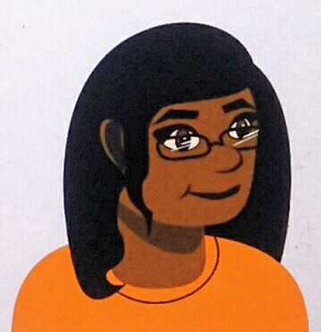
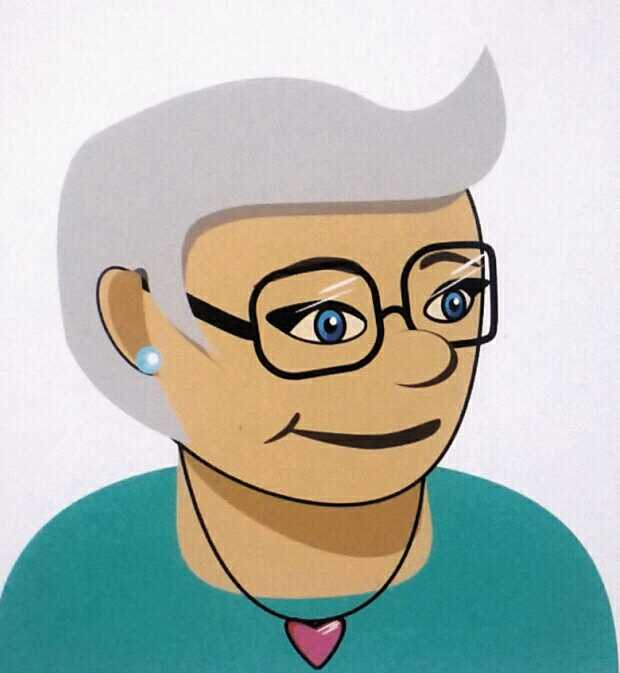
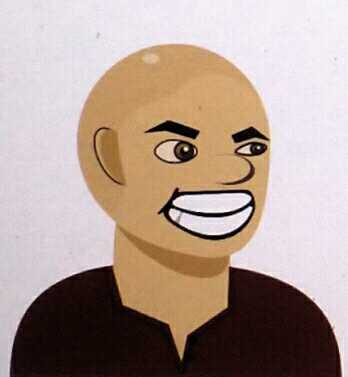
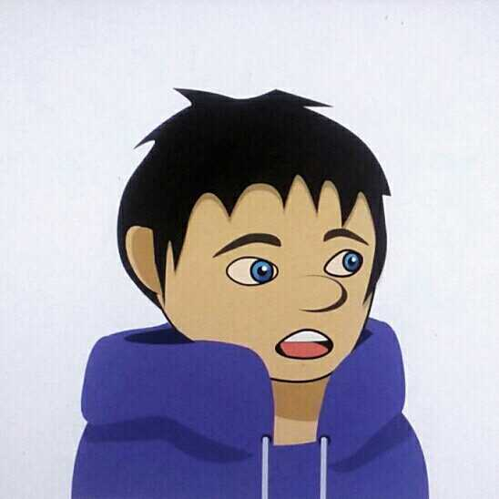

We've played games of all kinds, all of our lives: individual and team sports, board games, video games, mobile games, and most recently, games involving virtual reality. We believe games bring people of all ages together. They entertain and educate; encourage imagination, curiosity, and a sense of adventure; and they delight.
Of course, they can also frustrate and annoy, and that’s why we’re here!
We can help you find, and learn how to play, games of all kinds.
We love hearing your gaming stories, your ideas for new games, and stories about games that are "old favorites."

Who We Are
Cheyenne Alavrez
Favorite Game: Ark.
Cheyenne discovered computer and video games in elementary school and has recently begun a career in game development.
She loves designing game environments and characters, animation, and developing storylines.
Amy Facca
Favorite Games: Trivial Pursuit (a classic!), Tetris, Frogger, Donkey Kong, and Madden Football (thanks to her nephews!).
Amy grew up playing sports and games with friends and family.
While relatively new to video, computer, and mobile games, she is adapting well and loves to play games online.
Jason Gish
Favorite Games: Tecmo Super Bowl and Zelda games.
A long-time gamer, Jason now enjoys introducing the world of gaming to his kids.
Among other things, he is developing engaging and entertaining games that teach kids about computer programming.
Kyle Williams
Favorite Games: Skyrim and Minecraft.
Kyle grew up playing computer and video games.
Along the way, he began programming them too. He loves complexity, mystery, and classic battles of good vs. evil.